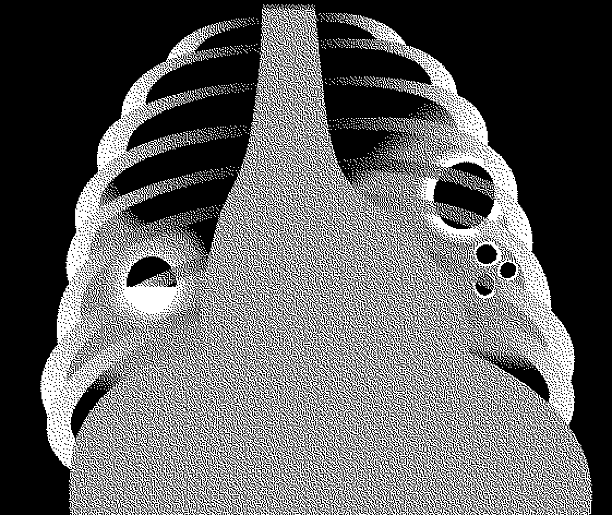

Pnewmoniýa öýkeniň sowuklamasy, adaty wiruslar we bakterial tarapyndan döreýär. Muňa seretmezden pnewmoniýany wiruslar ýa-da bakterial tarapyndan emele gelenligini amaly alamatlaryň ýa-da rentgen barlagy tarapyndan anyklamak kyn. Pnewmoniýa kliniki ala-matlaryň esasynda agyr we agyr däl, ýagny gaýraüzülmedik pnewmoniýa bölünýär. Her bir pnewmoniýa üçin özüne mahsus ýörite bejergisi bar. Hemme ýagdaýda antibakterial bejergini geçirmeklik zerur. Mundan başgada agyr pnewmoniýalar goşmaça goldaýjy be-jergini, ýagny hassahanada geçirilýän kislorod bilen bejergini talap etmegi mümkin.
4.2.1 Agyr pnewmoniýa
Kesel kesgidi
Üsgülewik we kynlaşan dem alyş+ we aşakdaky alamatlaryň haýsydyr biri:
 sentral sianoz ýa-da pulsoksimetriýada ganyň kislorod bilen doýgunlygy < 90%;
sentral sianoz ýa-da pulsoksimetriýada ganyň kislorod bilen doýgunlygy < 90%;- agyr derm ýetmezçiligi (mysal üçin, hykylap dem alma, döş kapasanyň çykyp duran ýerleriniň içine
çekilmegi;
- pnewmoniýanyň alamatlary umumy howplylyk alamatlary bilen:
 çaga emip ýa-da içip bilmeýär;
çaga emip ýa-da içip bilmeýär;- huşynyň bolmazlygy ýa-da adaty däl haýallyk (letargiýa);
- tutgaý.
- Mundan başga pnewmoniýanyň beýleki birnäçe ýa-da hemme alamatlary bolmagy mümkin:
- pnewmoniýanyň alamatlary:
 çaltlaşan dem alyş:
çaltlaşan dem alyş:
- 2-11 aýlyk çagalar üçin: ≥50/min
- 1-5 ýaş çagalar üçin: ≥40/min
- döş kapasasynyň galyp duran ýerleriniň içine çekilmegi (döş kapasasynyň aşaky böleginiň dem alanda içine çekilmegi);
- auskultatiw alamatlar:
- dem alyşyň peselmegi;
- bronhial dem alyş;
- çygly hyşyrdylar;
- sesiň titremeginiň plewral ekssudatyň üstünde peselmegi, dykyzlanan ýerde bolsa güýçlenmegi;
- plewranyň sürtülme sesi.
Jetwel 7. Pnewmoniýanyň agyrlygynyň klasssifisifikasyýasy
| Alamat ýa-da simptom | Agyrlyk derejesi | Bejergi |
|
Üsgülewik we çaltlaşan dem alyş we:
| Agyr pnewmoniýa |
|
| Pnewmoniýa |
|
| Pnewmoniýa ýok üsgülewik ýa-da sowuklama |
|
Laborator we enjamlaşdyrylan barlaglar
- Pnewmoniýa guman edilýän çagalaryň hemmesine ganyň kislorod bilen doýgunlylygyny pulsoksimetriň kömegi bilen barlaň.
- Eger-de mümkinçilik bar bolsa rentgen barlagyny geçiriň, plewral boşlugynda suwuklygyň barlygyny, plewranyň empiýemasyny, pnewmotoraksy, pnewmatoseleni, interstisial pnewmoniýany we perikardial suwuklygy inkär etmek üçin.
Bejergi
 Çagany hassahana ýerleşdiriň.
Çagany hassahana ýerleşdiriň.
Kislorod bilen bejergi
Kislorody yzygider kislorod ballonlaryndan ýa-da kislorod konsentratorlaryndan geler ýaly üpjün ediň.
- Ganyň kislorod bilen dolyganlylygy <90% bolan ýagdaýynda kislorod beriň.
- Bäbekler üçin iň gowysy burun kanýulalary ulanmak amatlydyr; eger-de olar ýok bolsa burun ýa-da burun-bogaz kateterleri ulanmak bolar. Kislorody berlişiň dürli düzgünleri we suratlary bap 10.7.
- Kislorodly bilen bejergä görkezmeler üçin pulsoksimetriýany ulanyň (ganyň kislorod bilen doýgunlygy 90% ýokary). Eger-de pulsoksimetriýany geçirmek mümkin bolmasa, kislorody gipoksiýa alamatlary aýrylýança beriň (çaga emip bilenok ýa-da dem alyşyň ýygylygy ≥ 70/min).
- Çaganyň ýagdaýynyň durnukly ýagdaýynda kislorody birnäçe wagtlyk aýyrjak bolup görüň, şol bir wagtda ganyň kislorod bilen doýgunlygyny pulsoksimetr bilen ölçäň. Eger-de howa bilen dem alanda ganyň kislorod bilen doýgunlygy 90% ýokarylygyna 15 minutdan köp saklanýan bolsa, kislorod bilen bejergini doly aýyrmak bolar.
Şepagat uýalary her 3 sagatdan burun kanýulalarynyň nem bilen dykylmanlygyny, olaryň dogry duranlygyny, hemme birleşmeleriniň berk duranlygyny barlap durmaly.
Antibiotikler bilen bejergi
- Ampisillin (ýa-da benzilpenisillin) we gentamisin damardan beriň.
- Ampisillin 50 mg/kg sanjymyny ýa-da benzilprnisillin 50000ED/kg sanjym ýa-da damardan her 6
sagatdan 5 günüň dowamynda beriň.
- Gentamisin 7,5 mg/kg sanjym ýa-da damardan 1 sapar günüň dowamynda azyndan 5 gün.
- Eger çaganyň ýagdaýy 48 sagadyň dowamynda gowulaşmasa, we stafilokikk pnewmoniýa guman edilýän bolsa, onda gentamisin (7,5 mg/kg sanjym 1 sapar günüň dowamynda) we kloksasillin (50 mg/ kg sanjym ýa-da damardan her 6 sagatdan) geçiň.
- Birinji hataryň derman serişdeleriniň netijeliligi pes ýagdaýynda, seftriakson 80 mg/kg sanjym ýa-da damardan 1 sapar günüň dowamynda beriň.
Goldaýjy bejergi
- Burnundan we agyz boşlugyndan hemme ýygnalýan nemleri çaganyň özi çykaryp bilmeýän bolsa usullyk bilen aýyryň.
- Eger-de çaganyň gyzgyny ýokary bolsa (≥39°C) we onuň özüni duýuşyny erbetleşdirýän bolsa, parasetamol beriň.
- Eger-de astmoid dem alşy bolsa, onda çalt täsir edýän bronholitik beriň (bap 4.5.2) we kortikosteroid serişdeleri gerek bolan ýagdaýynda beriň.
- Çaganyň ýaşyna görä gündelik suwuklygyň möçberini alýanlygyna uns beriň emma dipergidratasiýadan gaça duruň (bap 10.2).
- Ene süýdi bilen iýmitlendirmäni we agyzdan suwuklyk bermäni goldaň.
- Eger-de çaga emip bilmeýän bolsa, onda suwuklyklary uly bolmadyk möçberde na-zogastral zonduň kömegi bilen beriň. Eger-de çaga gerek bolan suwuklygy agyzdan kabul edip bilýän bolsa, onda nazogastral zondy goýmaklygyň geregi ýok, sebäbi zond ulanylanda aspirasion pnewmoniýa döremekligiň howpy köpelýär. Eger-de na-zogastral zont bilen birlikde kislorod hem berilýän bolsa, onda iki kateteri hem bir burun deşiginden salyň.
- Çaganyň ýagdaýynyň gowulaşmagy bilen naharlap başlajak boluň.
Gözegçilik
Şepagat uýalary çagalary azyndan 3 sapar, lukmanlar bolsa azyndan 2 sapar günüň dowamynda çagalara gözegçilik edip durmaly ondan ýokary. Bu alamatlar aýrylandan gaýraüzülmeleriň bolmadyk wagtynda azyndan iki günden çaganyň ýagdaýy gowulaşýar (dem alyş çaltlygy peselýär, döş kapasasynyň içine çekilmekligi aýdyň däl, gyzgyny peselýär we çaga iýip, içip başlaýar).
Beýleki mümkin bolan kesel kesgitlemeler we bejergi
- Eger-de çganyň ýagdaýy iki günüň dowamynda gowulaşmasa, onda gaýraüzülmeleri ýa-da başga keseli gözläň Mümkin bolsa, döş kapasasynyň rentgen barlagyny geçiriň. Beýleki mahsus keseller indikiler bolup biler: (bap 4.3).
Stafilokokk pnewmoniýa. Bu pnemoniýa geçirilýän bejergilere seretmezden kliniki alamatlaryň çalt erbetleşýänligi bilen häsiýetlenýär. Döş organlarynyň rentgen barlagynda pnewmatosele, plewral boşluklarda suwuklyk, pnewmotoraks, gakylygyň ýa-da empiýema suwuklygyň bakterial ekişinde bolsa gramm položitel kokklaryň ýa-da köp mukdarda S. Aureus taýajyklaryň ösmekligi bilen häsiýetlenýär. Deri örtüklerinde iriňjikleriň bolmaklygy bu keseli tassyklaýar.
- Kloksasillin (50 mg/kg damardan ýa-da myşsadan her 6 sagatdan) we gentamisin (7,5 mg/kg damardan ýa-da myşsadan 1 sapar günüň dowamynda) bilen bejeriň. Çaganyň ýagdaýy gowulaşandan soň (antibakterial serişdeleri bilen 7 gün bejergi-den soň) kloksasillini agyzdan 4 sapar günüň dowamynda 3 hepdelik kursy tamamlamak üçin beriň. Kloksasillini stafilokokklaryň duýgur bolan beýleki antibiotikleri bilen çalşyp bolýar, mysal üçin oksasillin, flýukloksasillin ýa-da dikloksasillin.
Inçe kesel. Eger-de çaganyň gyzgyny antibakterial bejergi berilenden soň 14 gün we ondan ýokary bolsa we onda pnewmoniýa alamatlary bar bolsa, onda bu çagada inçe keselini inkär etmeli. Eger-de gyzgynyň ýokarlanmagynyň başga sebäpleri tapylmadyk bolsa, onda çagada, esasan hem agyr iýmitlendirmäniň bozulmalary bolan çagada mümkin inçe kesel guman etmeli. Inçe keseli anyklamak üçin goşmaça barlaglary geçirmeli we inçe kesele garşy bejergini milli gollanmalar esasynda geçirmek gerek bolar (bap 4.7.2) hem-de onuň netijeliligine dowamly gözegçilik geçirmeli. Hemme inçe kesel guman edilýän çagalar AIW statusy anyklanmalydyr, eger-de ol näbelli bolsa
AIW –bilen zäherlenen çagalar (ýa-da AIW bilen zäherlenme guman edilýän). IW – bilen zäherlenen ýa-da AIW bilen zäherlenme guman edilýän çagalarda antibiotik bilen bejermekligiň aýratynlyklary bar. AIW ýokançly çagalarda pnewmoniýany şol bir döredi-jiler döredýän hem bolsa, AIW ýokanjy bolmadyk çagalaryňky ýaly, aýratynda bu çagalarda 4-6 aýlykda adaty pnewmosist pnewmoniýa (PSP) köplenç bolýar, bu hem aýratyn bejergini talap edýär (bap 8.4).
- Bejergini agyr pnewmoniýadaky ýaly geçiriň; Ampisillin+gentamisin ýokarda görkezilişi ýaly 10 gün beriň.
- Eger-de çaganyň ýagdaýy gowulaşmasa 48 sagadyň dowamynda seftriakson (80 mg/kg damardan 30 minudyň dowamynda 1 sapar günüň dowamynda beriň). Eger-de seftriak-son ýok bolsa, onda gentamisin+kloksasillin ýokarda agzalyşy ýaly beriň.
- Şeýlede 12 aýa çenli çagalara kotrimaksazoluň uly möçberini (8 mg/kg trimetoprim we 40 mg/kg sulfametaksozol damardan her 8 sagatdan ýa-da agyzdan 3 sapar beriň) 3 hepdäniň dowamynda beriň. 12 aýdan 59 aýa çenli çagalara kotrimaksozoly diňe PSP alamatlary bolanda beriň (mysal üçin, rentgende pnewmosist pnewmoniýa alamatlary).
- Bu çagalaryň alnyp barlyşy we pnewmosist pnewmoniýanyň öňüni alnyşy beýan edilen (bap 8).
Hassahanadan çykarmak
Agyr pnewmoniýaly çagalary hassahanadan çykarylyp bolýar, eger-de:
- Dem ýetmezçilik alamatlary aýrylyşan bolsa.
- Gipoksemiýa alamatlary ýok (ganyň kislorod bilen doýgunlygy >90%)
- Işdäsi gowy.
- Dermanlary agyzdan içip bilýärler we parenteral görnüşli dermanlaryň doly kursyny aldylar.
- Ene-atalary pnewmoniýanyň alamatlaryny, howp faktorlary we lukmana haçan ýüz tutmaly
ýagdaýlary bilýärler.
|  | |
Dowamly gözegçilik
Agyr pnewmoniýaly çagalarda üsgülewik birnäçe hepdäniň dowamynda bolup bilýär. Bu çagalar agyr kesel geçirendikleri sebäpli, olaryň iýmitlenmesi has gowy bolmaly. Geçirilmeli sanjymlary ediň. Çaga hassahanadan çykandan 2 hepdeden soňra eger-de mümkinçilik bar bolsa, dowamly gözegçilik geçiriň we çaganyň iýmitlenmesine üns beriň. Şeýle-de howp faktorlary bolan iýmitlenmäniň bozulmasy, otagdaky howanyň hapalanmagyna we ene-atalarynyň çilim çekýändiklerine üns beriň.
4.2.2 Pnewmoniýa
Kesel kesgidi
Üsgülewik we kynlaşan dem alyş haýsydyr bir aşakdaky alamatlar bilen:
- çaltlaşan dem alyş:
- 2-11 aýlyk: ≥50/min
- 1-5 ýaş: ≥40/min
- döş kapasasynyň aşaky böleginiň içine çekilmegi.
Mundan başga-da öýkeniň aukultasiýasynda çygly hyşyrdylar ýa-da plewranyň sürtülme sesi eşidilip bilner.
Çagada agyr pnewmoniýanyň alamatlarynyň ýoklygyna göz ýetiriň:
- sentral sianoz we pulsoksimetriýa geçirilende ganyň kislorod bilen doýgunlygy <90%;
- agyr dem ýetmezçilik (mysal üçin, hykylap dem almak, döş kapasasynyň çykyp duran ýerleriniň
aýdyň içine çekilmegi);
- içip ýa-da emip bimeýär ýa-da her bir iýmitden soň gaýtarma;
- tutgaý
- auskultasiýada peselen dem alyş ýa-da bronhial dem alyş, ýa-da plewral boşluklaryna suwuklygyň ýygnanma, plewranyň empiýemasynyň alamatlary.
Bejergi
- Çagany ambulator şertlerde bejeriň.
- Çaganyň ene-atasyna ýa-da oňa ideg edýänlere çaga gyzdyrýan bolsa, adaty ene süýdi we suwuklyklar bilen birlikde goşmaça ene süýdini we suwuklyklary köpräk bermelidigini aýdyň. Uly bolmadyk möçberdäki suwuklyklar gowy siňýär we gaýtarmany seýrek emele getirýär.
Antibakterial bejergi
- Antibakterial serişdäniň ilkinji möçberini hassahanada beriň we ejesine öýde dermany nädip bermelidigini öwrediň.
- Çaga agyzdan amoksasillin beriň:
- AIW ýokanjy giňden ýaýran sebitlerde amoksasillini azyndan 40 mg/kg hasabyndan 2 sapar günüň
dowamynda 5 gün beriň;
- AIW ýokanjy seýrek duş gelýän sebitlerde azyndan 40 mg/kg hasabyndan 2 sapar günüň dowamynda 3 gün beriň.
- Howply dermanlary ulanmakdan gaça duruň, mysal üçin düzüminde atropin, kodein ýa-da alkogol saklaýan dermanlary.
Dowamly gözegçilik
Ejesiniň çagany emdirýänligini goldaň. Ejesine çagany 3 günden saglygy goraýyş edarasynda ýa-da ýagdaýy erbetleşse ondan hem ir, eger çaga emip, içip bilmese derrew getirmelidigini tabşyryň. Haçanda çagany saglygy goraýyş edarasyna getirenlerinde:
- Eger-de çaganyň dem alyşy gowulaşan bolsa, gyzgyny peselen bolsa we çaga iýip başlan bolsa, onda
antibakterial serişdäniň kursyny tamamlaň.
- Eger-de dem alyş sany we/ýa-da, gyzgyny we/ýa-da we işdäsi üýtgemedik bolsa, astmoid dem alyşy
inkär ediň. Eger-de astmoid dem alyş ýok bolsa, onda çagany gaýraüzülmeleriň barlygyny anyklamak
ýa-da kesel kesgidini takykylamak üçin hassa-hana ýerleşdiriň.
- Eger-de çagada agyr pnewmoniýanyň alamatlaryny tapan bolsaňyz, onda çagany hassahana kabul
ediň we maslahat berilýän görkezmeler boýunça bejergi beriň.
- ОIýmitlendirmäniň bozulamalary, otagdaky howanyň hapalanmagy we ene-atasynyň çilim çekmegi ýaly
howp faktorlaryna üns beriň.
AIW ýokançly çagalarda pnewmoniýa
- AIW ýokançly we pnewmoniýasy bar bolan çagalary hassahana ýerleşdirmeli we agyr pnewmoniýaly çagalar ýaly alyp barmaly (bap 4.2.1)
- Bu çagalaryň soňraky alyp barlyşy, PSP öňüni almak bilen bap 8 beýan edilen.